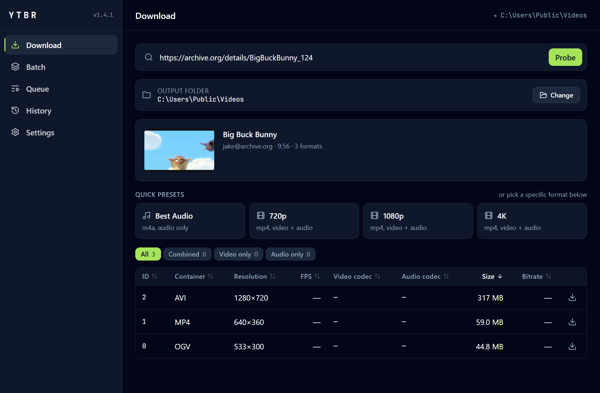
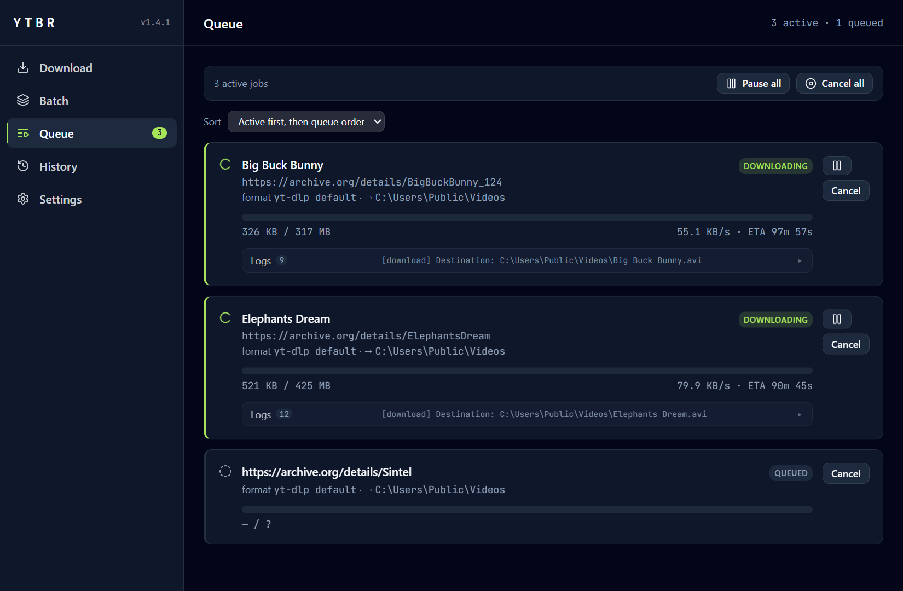
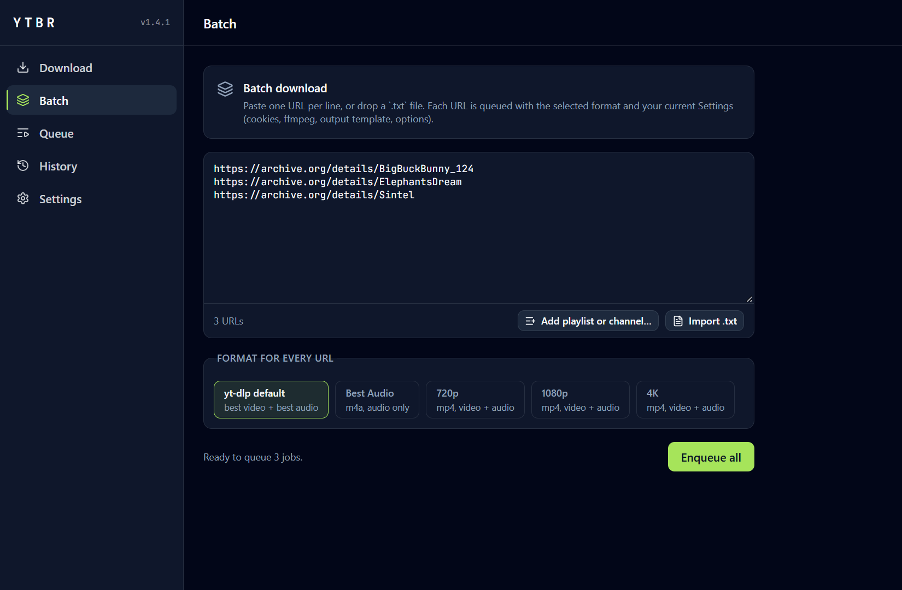

The yt-dlp desktop app for Windows and Linux
Paste a link, pick a format, download. YTBR puts a clean interface on top of yt-dlp, for a single video or a whole playlist, with no terminal and nothing else to install.

What it does
- Shows every format first
- YTBR lists what a link offers in a sortable table: container, resolution, codecs, size. Pick a row, or use a preset for best audio, 720p, 1080p or 4K.
- Downloads in batches
- Paste URLs one per line, import a text file, or expand a playlist or channel into its entries with one click.
- Runs a queue you can steer
- Pause, resume and cancel downloads, set how many run at once, read each job's log and retry the ones that failed.
- Remembers where it was
- The queue and the history survive a restart. Unfinished downloads pick up again when you open the app.
- Handles sign-in and network settings
- Use your browser's cookies or a cookies.txt file for content that needs a login, and set a speed limit or a proxy.
- Adds the extras yt-dlp is known for
- Subtitles with a language filter, embedded thumbnails and metadata, and SponsorBlock to mark or cut segments.
- Keeps itself current
- Signed in-app updates for YTBR, and a separate one-click update for the bundled yt-dlp when a site changes.
- Leaves you alone
- No telemetry, no ads, no account. It can sit in the system tray while it works.
See what is happening
Every download shows its title, progress, speed and remaining time. Two run at once here while a third waits its turn; the limit is yours to set.

Queue a whole list at once
The Batch tab takes any number of links and one format for all of them. A playlist or channel URL expands into its videos before anything is queued.

Install
Every installer is on the latest release page. Each one includes yt-dlp, ffmpeg and ffprobe.
Windows 11
Run the .msi or the -setup.exe, then open YTBR from the Start menu. The installer is not code-signed yet, so SmartScreen asks once: choose More info, then Run anyway.
Ubuntu and Debian
sudo dpkg -i YTBR_*_amd64.debFedora and RHEL
sudo rpm -i YTBR-*.x86_64.rpmAny Linux distribution
chmod +x YTBR_*_amd64.AppImage
./YTBR_*_amd64.AppImageQuestions
Do I need to install yt-dlp, Python or ffmpeg?
No. The installer bundles yt-dlp, ffmpeg and ffprobe. yt-dlp can be updated from Settings without reinstalling YTBR.
Which sites work?
Everything yt-dlp supports; see its list of supported sites. When a site changes and downloads start failing, update yt-dlp from Settings first.
Can it download audio only?
Yes. Use the Best Audio preset or pick an audio row in the format table. The target audio format (MP3, Opus, FLAC, WAV) is a setting.
Can it download whole playlists or channels?
Yes. Paste the playlist or channel URL into the Batch tab and expand it, or paste a list of URLs, one per line.
A download says I have to sign in. What now?
Some videos are only served to logged-in sessions. Point YTBR at your browser's cookies or at an exported cookies.txt under Settings, Cookies.
Is YTBR free?
Yes. It is licensed under Apache-2.0, with no ads, no telemetry and no paid tier.
Is there a macOS version?
Not at the moment. Building from source may work but is untested.